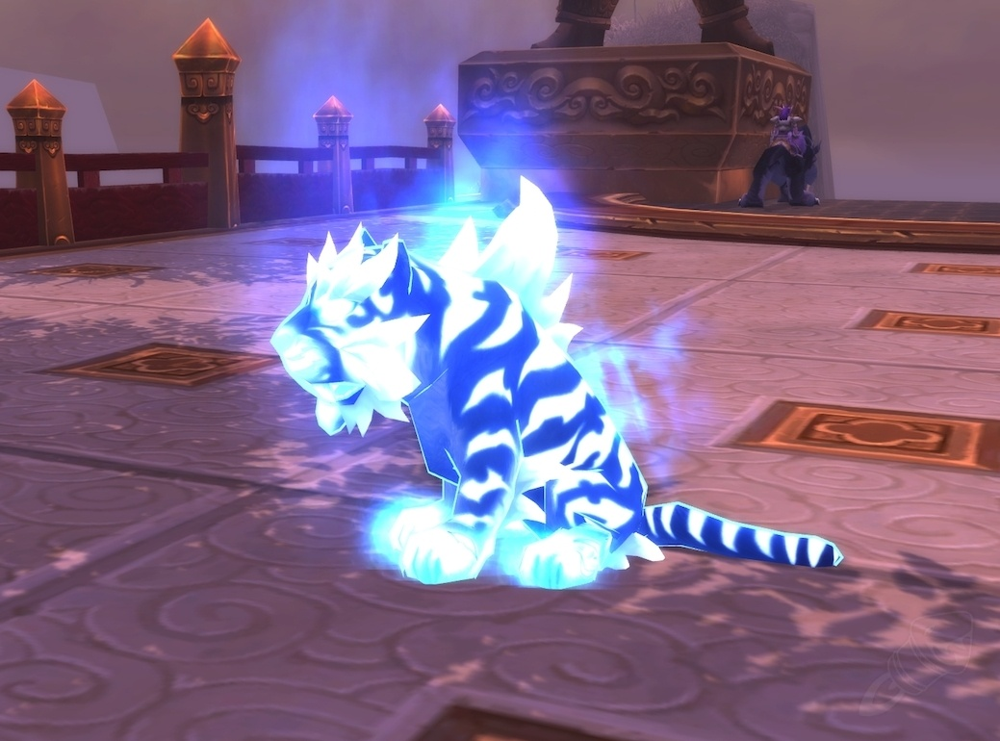
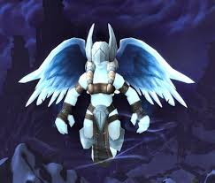
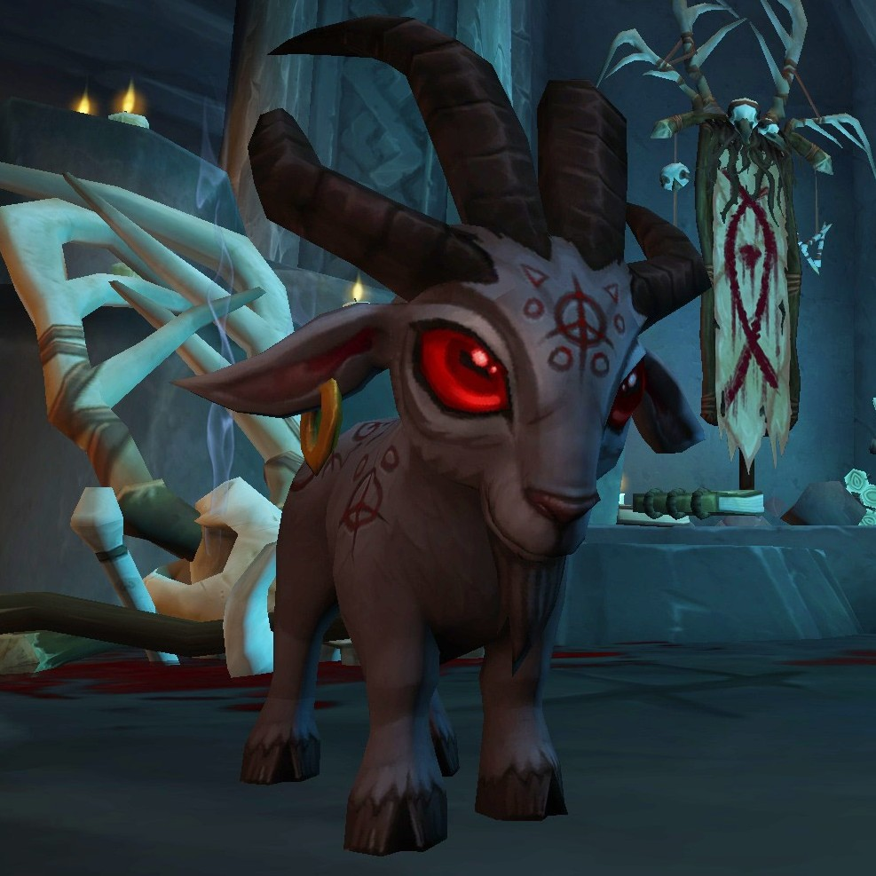
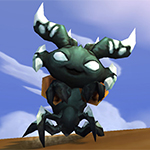
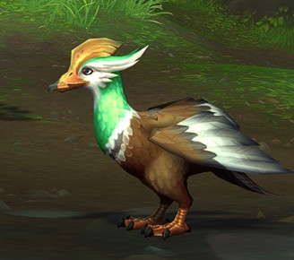

Guide du Tournoi

Page WoWHead avec les différents points d'apparition

Recherche démentielle de compagnons



Œuf de canard légèrement mâchouillé
| Classement | Nom | Image | Famille | Mode d'obtention |
|---|---|---|---|---|
| 1° Place | Xu Fu, petit de Xuen |  |
Bête |
Tournoi des Astres Vénérables
Guide du Tournoi |
| 2° Place | Val'kyr en herbe |  |
Mort-vivant | Combat de mascottes en Norfendre
Page WoWHead avec les différents points d'apparition |
| 3° Place | Groopy | |
Bestiole | Réaliser le haut-fait :
Recherche démentielle de compagnons |
| 4° Place | Baa'l |  |
Magique | Secret Secret |
| 5° Place | Bonheur |  |
Elémentaire | HF HF |
| Mention honorable | Canard Smaragdin |  |
Aérien |
Trésor des plaines d'Ohn'ahra
Œuf de canard légèrement mâchouillé |